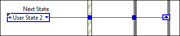

簡易ステートマシン
簡易ステートマシンテンプレートを使用すると、コードの特定セクションの実行シーケンスを容易に定義できます。この実装は、多くの場合ムーアマシンと呼ばれ、現在のステートにおける決定に基づいて次のステートを決定します。このデザインでは、ユーザのアプリケーションのストラクチャに大幅な変更を加えることなく、新しいコードセクションの追加、コードセクションの削除、セクションの実行順序の変更を簡単に行うことができます。
システム要件
LabVIEWベースパッケージ、開発システム、プロフェッショナル開発システム
使用例
このテンプレートは、以下で構成されるアプリケーションに適してします。
- ステート
- 特定のステートに移行するタイミングを決定する意思決定論理
たとえば、以下のアプリケーションにはステートマシンパターンが有効です。
- 単一ページまたはタブ付きのダイアログボックス。ダイアログボックスの各タブは、1つのステートです。ユーザが特定のタブをクリックするとステートが移行します。各タブのステートには、ユーザが実行できるすべての操作が含まれます。
- 現金自動預け払い機（ATM）。このアプリケーションには、ユーザ入力待機、要求金額に対する口座残高の確認、支払い、レシート印刷などのステートがあります。
- 1つの測定値を取り、ディスクに記録し、次のユーザ操作を待機するアプリケーション。このアプリケーションには、ユーザ入力待機、測定、データの記録、データの表示などのステートがあります。
概要
メモ:
- 上記ダイアグラム中の各ステートは、Main.vi中の各サブダイアグラムに対応します。各ステートは次の動作を実行します。
- 操作を実行する。
- Whileループ上にあるシフトレジスタに命令を渡すことによって、次のステートをステートマシンに伝達する。
- 初期化後に、ステートマシンはWait for Eventステートに移行します。このステートには、フロントパネルの変更を待機するイベントストラクチャが含まれます。ユーザがボタンをクリックすると、イベントが認識され、イベントストラクチャの適切なサブダイアグラムに切り替えられます。このサブダイアグラムは適切なステートへの移行をトリガします。
- 各ステートはデータクラスタにアクセスできます。このクラスタのデータタイプはData.ctlで定義されています。
- 有効なステートは、タイプ定義であるState.ctlにリストされています。タイプ定義によってステートを移行させることで、使用するステートを限定し、ステートマシンが不明なステートに移行する可能性を低減することができます。
- 停止ステートだけがアプリケーションを停止できます。この設計では、以下を保証することで意図しないシャットダウンまたは部分的なシャットダウンを回避できます。
- ユーザがアプリケーションの停止を意図した場合にのみシャットダウンコードを実行する。
- シャットダウンコードを必ずに最後まで実行する。
- ステートは1度に1つだけ実行され、1つのWhileループではすべてのタスクが同じレートで実行されます。マルチレートでの実行または並列タスクが必要な場合は、プロジェクトを作成ダイアログボックスで選択できる「キューメッセージハンドラ」テンプレートまたは「アクターフレームワーク」テンプレートの使用をお勧めします。
- イベントを待機ステートは、ユーザ入力を認識する唯一のステートです。ユーザ入力を受け入れるためには、ステートマシンがこのステートになければなりません。
このテンプレートを実行する
- プロジェクトエクスプローラウィンドウで、Main.viを開いて実行します。
- フロントパネル制御器をクリックしてさまざまなポップアップダイアログボックスを開きます。
このテンプレートを変更する
ニーズを特定する
テンプレートのカスタマイズを開始する前に、以下の点を明確にします。
- アプリケーションに含まれるステート これにより追加するステートが決まります。
- 各ステートの次のステート これにより、各ステートがWhileループのシフトレジスタへ送信する次のステート列挙体の値が決まります。
条件に応じて、1つのステートから複数の異なるステートへ移行することもできます。たとえば、このテンプレートのWait for Eventステートはユーザの入力内容に応じて異なるステートへ移行します。
- 各ステートがアクセスする必要のあるデータ これによりData.ctlに追加するデータタイプが決まります。
- 発生する可能性のあるエラー、およびそのようなエラーが発生した場合のアプリケーションの応答 これにより必要なエラー処理の規模が決まります。
初期化コードを追加する
アプリケーションに初期化コードを追加するには、以下の手順に従ってください。
- ケースストラクチャのInitializeサブダイアグラムを開きます。
- アプリケーションを初期化するためのコードを追加します。たとえば、ログ用にディスク上のファイルを開いたり、Data.ctlのデータを特定の値に初期化するコードなどを記述します。
- 移行先となるステートを決定します。Initializeステートは、デフォルトではWait for Eventステートへ移行します。

アプリケーションでのニーズに応じて、他のステートへ移行するようコードを変更することができます。
ステートの移行を開始する制御器を追加する
- フロントパネルに制御器を追加します。
- ケースストラクチャのWait for Eventサブダイアグラムを開きます。
- イベントストラクチャにイベントケースを追加します。
- イベントを、新しく追加した制御器の値が変更されるとトリガされるよう構成します。以下に例を示します。
- OKをクリックします。イベントストラクチャにサブダイアグラムが作成されます。
- このサブダイアグラムにある新しい制御器のブロックダイアグラム端子をドラッグします。
- ユーザによるこの制御器の操作に応じた移行先のステートを決定し、ステートの値の列挙体を次のステート出力トンネルに配線します。

移行先のステートがない場合は、追加します。
ステートを追加する
ステートを追加するには以下の手順に従ってください。
- 有効なステートを含むタイプ定義であるStates.ctlを更新します。
- States.ctlの列挙体を探し、タイプ定義を開きます。
制御器エディタウィンドウが開きます。
- ステート列挙体で新しいステート用のスペースを追加します。
- 新しいステートの名前を入力します。以下に例を示します。
- 制御器の外側をクリックしてステートリストに名前を追加します。
- ファイル→変更を適用を選択します。
- ステートマシンにステートを追加します。
- Main.viのケースストラクチャにサブダイアグラムを追加します。
- ステートが実行するコードを追加します。このコードを記述する際は、以下のガイドラインに従ってください。
- ステートデータのアクセスおよび修正には、「名前でバンドル解除」関数と「名前でバンドル」関数を使用します。
- 関数のエラー端子は、エラーシフトレジスタに配線してください。
- ブール出力トンネルにはFALSE定数を配線してください。停止ステートだけがループを停止できます。
- 各ステートで、その次の移行先ステートを指定してください。次のステートの値を「次のステート」出力トンネルに配線します。この端子は直接配線するか、条件論理を実装できます。以下の図は、そのような論理の例を示したものです。
上記のコードでは、データが0より大きい場合は、User State 1が次のステートとなります。それ以外の場合はUser State 2が次のステートとなります。より高度な条件論理を記述するには、ケースストラクチャを使用します。
- アプリケーションに次のステートへの移行コードを追加してください。
ステートがアクセスするデータタイプを変更する
ステートがアクセスするデータタイプを変更するには、以下の手順に従ってください。
- Data.ctl列挙体を見つけ、タイプ定義を開きます。
制御器エディタウィンドウが開きます。
- 制御器をカスタマイズします。
- ファイル→変更を適用を選択します。
シャットダウンコードを追加する
ケースストラクチャのStopサブダイアグラムにシャットダウンコードを追加します。このケースはアプリケーションを停止する唯一のケースであるため、このサブダイアグラムに追加するコードは、必ずアプリケーションが停止する前にのみ実行されます。この設計によって、意図しないシャットダウンまたは部分的なシャットダウンを回避できます。
一般に、シャットダウンコードは以下のタスクを実行します。
- 開いているすべてのリファレンスを閉じてメモリを解放します。
- 使用中のすべてのバッファを破棄します。
- ハードウェア入力チャンネルに安全な値を書き込みます。
エラー処理を追加する
このテンプレートは、デフォルトでは1つの関数のエラー出力端子にエラーが返されると停止します。ただし、特定のエラーを無視したり、より高度なエラー処理を実装する必要がある場合があります。エラー処理を追加するには、以下の手順に従ってください。
- Errorステートを追加します。
- Errorステートには、エラーを処理するためのコードを記述します。
- 他のすべてのステートを、エラーが発生した場合に確実にErrorステートに移行するよう構成します。以下に例を示します。
ユーザインタフェースを削除する
アプリケーションがユーザインタフェースを必要としない場合は、以下の手順に従って削除します。
- すべてのフロントパネル制御器および表示器を削除します。
- Main.viのケースストラクチャからWait for Eventサブダイアグラムを削除します。
- 壊れているワイヤをすべて修正します。
State.ctlからWait for Eventを削除することもできます。これにより、ステートマシンがこのステートへの移行を試みることがなくなります。ただし、これを行う前に、アプリケーション内に存在するこのステートを呼び出す列挙体を確認する必要があります。変更したState.ctlを保存すると、これらの列挙体も変更されます。新しいステートが意図した通りかどうか確認してください。
関連情報
このテンプレートで扱われているLabVIEWの概念またはオブジェクトの詳細については、LabVIEWでヘルプ→LabVIEWヘルプを選択してアクセスできる『LabVIEWヘルプ』を参照してください。LabVIEWオブジェクトの上にカーソルを移動して、詳細ヘルプウィンドウを使用して各オブジェクトの基本情報を表示することもできます。LabVIEWで詳細ヘルプウィンドウを表示するには、ヘルプ→詳細ヘルプを表示を選択します。
測定アプリケーションにおけるこのテンプレートの使用例については、プロジェクトを作成ダイアログボックスで「有限測定」サンプルプロジェクトを参照してください。
このテンプレートの開発者ウォークスルーについては、ni.com/jpを参照してください。
法的情報
著作権
© 2016 National Instruments.All rights reserved.
著作権法に基づき、National Instruments Corporationの書面による事前の許可なく、本書のすべて又は一部を写真複写、記録、情報検索システムへの保存、及び翻訳を含め、電子的又は機械的ないかなる形式によっても複製又は転載することを禁止します。
NIは他者の知的財産を尊重しており、お客様も同様の方針に従われますようお願いいたします。NIソフトウェアは著作権法その他知的財産権に関する法律により保護されています。NIソフトウェアを用いて他者に帰属するソフトウェアその他のマテリアルを複製することは、適用あるライセンスの条件その他の法的規制に従ってそのマテリアルを複製できる場合に限り可能であるものとします。
エンドユーザ使用許諾契約及び他社製品の法的注意事項
エンドユーザ使用許諾契約（EULA）及び他社製品の法的注意事項はインストール後の以下の場所にあります。
- 注意事項は、<National Instruments>¥_Legal Information及び<National Instruments>ディレクトリにあります。
- EULAは、<National Instruments>¥Shared¥MDF¥Legal¥licenseディレクトリにあります。
- NI製品で作成したインストーラに法律情報を組み込む方法については、<National Instruments>¥_Legal Information.txtを確認してください。
米国政府の権利の制限
お客様が米国政府の機関、省又はその他の事業体（「米国政府」と総称する）である場合、本書に記載の技術データの使用、複製、再製、公表、修正、開示又は転送は、民間機関用の連邦調達規則52.227-14と軍事機関用の国防省連邦調達規則補足252.227-7014及び252.227-7015に基づく限定権利条項の適用を受けます。
IVI Foundation Copyright Notice
Content from the IVI specifications reproduced with permission from the IVI Foundation.
The IVI Foundation and its member companies make no warranty of any kind with regard to this material, including, but not limited to, the implied warranties of merchantability and fitness for a particular purpose. The IVI Foundation and its member companies shall not be liable for errors contained herein or for incidental or consequential damages in connection with the furnishing, performance, or use of this material.
商標
NIの商標については、NI Trademarks and Logo Guidelines（ni.com/trademarks）を参照してください。本書中に記載されたその他の製品名及び企業名は、それぞれの企業の商標又は商号です。
特許
National Instrumentsの製品を保護する特許については、ソフトウェアで参照できる特許情報（ヘルプ→特許）、メディアに含まれているpatents.txtファイル、又はni.com/patentsからアクセスできるNational Instruments Patent Noticeのうち、該当するリソースから参照してください。